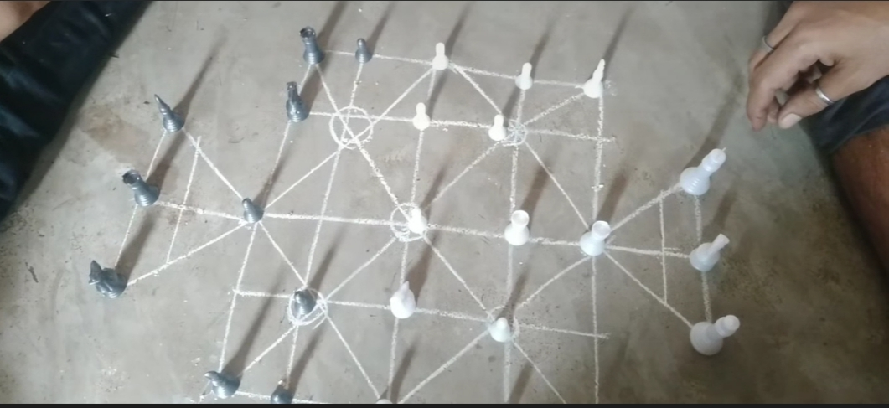

Sholo Guti (ষোল গুটি)
An ancient two-player neuro-tactical board game of strategic capture and spatial control, widely played across rural and urban Bangladesh.
Overview & Etymology
The name 'Sholo Guti' originates from 'Sholo' meaning sixteen and 'Guti' meaning pawns or pieces. It is a two-player game played on a geometrical court where each player commands 16 pawns.
Played almost year-round across rural Bangladesh, it serves as a primary leisure activity. During the monsoon, it is played on house terraces or verandas, while in summer, players gather outdoors in calm settings such as under tree shade, near paddy fields, or by pond sides. It is played across all age groups from children to elders whenever peers meet.
Neuro-Tactical & Cultural Significance
While strictly a game for two players, Sholo Guti is recognized as an intense game of neuro-tactics and intellectual strategy. It demands high levels of focus and concentration over a 37-dot grid.
The psychological duel revolves around strategic position calculations, trapping opposing pieces, and creating attacking nets while keeping one's own pawns safe.
Historical Lineage & Mythological Links
Although lacking a single documented point of origin, analytical critics note that Sholo Guti bears a strong resemblance to Chess. In earlier historical eras, it was frequently called the Mughal-Pathan war game, reflecting how the medieval conflict between Mughal and Pathan forces influenced the socio-political culture of the region. A player or observer can easily associate its moves with war plans and troop maneuvers.
Researchers also link Sholo Guti to the ancient dice game Pasha Khela (Game of Dice), which is famously cited in the ancient Indian epic, the Mahabharata.
Court Architecture & Technical Specifications
| Court Structure | A rectangular central court attached to two triangular shapes on opposite ends, consisting of 14 intersecting lines (vertical, horizontal, and diagonal). |
|---|---|
| Grid Points | A total of 37 dot-points formed by line intersections. |
| Pawn Sets | 32 total pawns (16 per player) in two distinct colors or material types. |
| Materials Used | Pawns can be crafted from small stones, brick chips, sliced wood, or plant leaves. |
| Court Types | Temporary: Drawn on clean ground, mud surface, or concrete. Permanent: Engraved directly onto concrete floors, extended verandas, or house rooms. |
Gameplay Rules & Movement Phases
1. Setup & Starting ("Chaal")
Both players sit facing each other with the court drawn between them. Pawns are placed on 16 initial dot-points on opposite sides, leaving the central line vacant. The first move (Chaal) is decided by mutual agreement. Matches are usually played in sets (best 3 out of 5 sets).
2. Types of Moves
- Strategic Move (Chaal): A player moves one pawn along a connecting line to an adjacent empty dot-point.
- Beatan Move / Capture (Guti Khaaoa): A player captures an opponent's pawn by leaping over it into an empty dot-point immediately behind or adjacent to it.
- Multiple Captures (Khasa Chaal): If a landing spot allows further leaps over other enemy pawns in the same turn, a player can execute multiple jumps in a single turn.
3. Winning Condition
The primary objective is to capture all 16 pawns of the opponent. A player wins when they successfully eliminate all enemy pieces or block the opponent so they have no legal moves remaining.
Visual Archive
